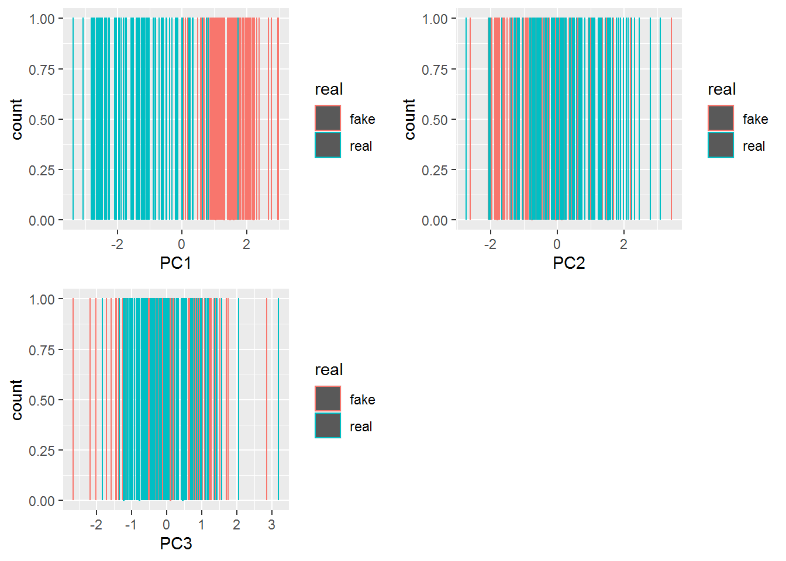

Chapter 1 PCA
PCA 全名 Principal Component Analysis ，中文名字為主成分分析，主要是用來解決共線性以及變數過多的問題，這種方法十分基本也好用，所以廣受大家喜愛，路上隨便抓一個路人都會說他會做PCA，如果你現在不會的話也沒有關係，希望看完這個後大家會知道 PCA 的原理還有如何看分析結過。
以下會有一些數學算式，看不懂就算了其實沒關係，因為弄懂他並不會讓人生更快樂。
x.new <- x %>% mutate(real = c(rep("real",100), rep("fake",100)))
#前一百筆是真鈔資料，後一百筆是假鈔資料。 head(x) %>% kable()| V1 | V2 | V3 | V4 | V5 | V6 |
|---|---|---|---|---|---|
| 214.8 | 131.0 | 131.1 | 9.0 | 9.7 | 141.0 |
| 214.6 | 129.7 | 129.7 | 8.1 | 9.5 | 141.7 |
| 214.8 | 129.7 | 129.7 | 8.7 | 9.6 | 142.2 |
| 214.8 | 129.7 | 129.6 | 7.5 | 10.4 | 142.0 |
| 215.0 | 129.6 | 129.7 | 10.4 | 7.7 | 141.8 |
| 215.7 | 130.8 | 130.5 | 9.0 | 10.1 | 141.4 |

Figure 1.1: A caption
以上為\(X_1 \sim X_6\)(\(V_1 \sim V_6\))的意思。（希望看得懂啦~）
接著要對他們做 PCA 的！一步一步慢慢來。
1.0.1 第一步：標準化
\[X_{std} = \frac{X-\mu}{\sigma}\]
\[\mathcal{X^*=C_nXD^{-1/2}}\]
\(C_n\) Cnetering Matrix： 這個矩陣的目的就是讓全部的\(X\)都減去\(\bar{X}\)
\[C_n = I_n-\frac{1}{n}J_n\] \(J_n\)為所有元素都是1的矩陣。
例如； \[C_2 = \begin{bmatrix}1 &0 \\0 & 1\end{bmatrix}-\frac{1}{2}\begin{bmatrix}1 &1 \\1 & 1\end{bmatrix} = \begin{bmatrix}\frac{1}{2} &-\frac{1}{2}\\-\frac{1}{2} & \frac{1}{2}\end{bmatrix}\]
\(\mathcal{D}\) 為對角線\(S_{x_i}{x_i}}\)的對角矩陣。
\(\lambda = (\lambda_1, \lambda_2, ...\lambda_p)\) 為 \(\mathcal{X^*}'\mathcal{X^*}\)的 eigenvalues，\(\mathcal{V} = (v_1, v_2,...v_p)\)是對應的 eigenvactors。
n = nrow(x) # 幾個觀察值（幾張鈔票）
p = ncol(x) # 幾個獨立變量（總共觀察幾個東西）\(C_n\)
J_n <- matrix(1, n, n) #都是1的矩陣
I_n <- diag(1,n,n)
C_n <- I_n-(1/n)*J_n\(D^{-1/2}\)
d = diag(c(sd(x$V1)^-1, sd(x$V2)^-1, sd(x$V3)^-1, sd(x$V4)^-1, sd(x$V5)^-1, sd(x$V6)^-1))xs = (C_n %*% (as.matrix(x))%*% (d))
xs2 = (1/(n-1))*t(xs) %*% xs1.0.2 eigenvalues、 eigenvectors
eig = eigen(xs2) # spectral decomposition
lambda = eig$values
gamma = eig$vectors- 直接使用
x = scale(x)
eig = eigen(cov(x)) # spectral decomposition
lambda = eig$values
gamma = eig$vectors其中eigenvectors彼此之間互相獨立（內積為零），也就是線性組合出來新的值不具共線性。
eigenvalues 表示該組合所含的變異，變異越多越好，表示可以將每個自變量的不同表示的越徹底，也就是說喪失的資訊量越少，所以eigenvalues都從大的開始挑，通常挑到可以解釋的百分之七八十（看自己定義啦，社會科學要求較低，約七八十就可以，畢竟人很複雜的；但是工業統計就會要求很高，通常要九十以上。）
要如何看包含的變異呢，通常就是以下這個公式：
\[ \lambda_1\ \geq\lambda_2 \geq ...\geq\lambda_p\ ; \ V = \frac{\sum_{i=1}^k\lambda_i}{\sum_{i=1}^p\lambda_i}\ ; \ k \leq p \]
當這個數值達到你要的變異量(\(V\))的最小的k，就是你要的\(\lambda\)的量。
lambda.sum <- lambda %>% sum
lambda.dt <- data.frame(X=c(1:p),
lambda = lambda,
cum =cumsum(lambda/lambda.sum))
lambda.dt %>% round(3)%>% kable()| X | lambda | cum |
|---|---|---|
| 1 | 2.946 | 0.491 |
| 2 | 1.278 | 0.704 |
| 3 | 0.869 | 0.849 |
| 4 | 0.450 | 0.924 |
| 5 | 0.269 | 0.969 |
| 6 | 0.189 | 1.000 |
ggplot(lambda.dt)+
geom_point(mapping = aes(x = c(1:p), y = cum))+
geom_path(aes(x = c(1:p), y = cum, group = 1))+
ylim(c(0.4,1.02))+
labs(x = "lambda",
y = "累加")由上方表格可以看出，到第三個eigenvalue 就已經解釋變異的量就已經達到 80%，所以我們就決定使用\(\lambda_1,\lambda_2,\lambda_3\) ，那他對應的eigenvector 分別為：
gamma[,1:3]## [,1] [,2] [,3]
## [1,] -0.006987029 0.81549497 -0.01768066
## [2,] 0.467758161 0.34196711 0.10338286
## [3,] 0.486678705 0.25245860 0.12347472
## [4,] 0.406758327 -0.26622878 0.58353831
## [5,] 0.367891118 -0.09148667 -0.78757147
## [6,] -0.493458317 0.27394074 0.113875361.0.3 線性組合
重新經過線性組合的變量為：
\[y_i = Xv_i\]
y <- as.matrix(x) %*% gamma[,1:3]
y <- y %>% as.data.frame()
y %>% head()## V1 V2 V3
## 1 1.7430272 1.64669605 1.4201973
## 2 -2.2686248 -0.53744461 0.5313151
## 3 -2.2717009 -0.10740754 0.7156191
## 4 -2.2778385 -0.08743490 -0.6041176
## 5 -2.6255397 0.03909779 3.1883837
## 6 0.7565089 3.08101359 0.7845117y.new <- y %>% mutate(real = c(rep("real",100), rep("fake",100)))1.0.4 主成分之組成
用圖形可以看一下主成分的組成，首先
gamma = eig$vectors
gamma = add_column(gamma %>% as.data.frame(), V0 = c("X1","X2","X3","X4","X5","X6"), .before = 1)
gamma.01 <- data.frame(PC = as.character(),V0 = as.character(),loading = as.numeric() )
colnames(gamma) <- c("V0", rep("loading", 6))
for (i in 1:6) {
a <- gamma[,c(1,i+1)]
a <- add_column(a, PC = rep(i, nrow(a)), .before = 1)
gamma.01 <- rbind(gamma.01, a)
}
gamma.01[,1] <- as.character(gamma.01[,1])
ggplot(gamma.01)+
geom_point(aes( x = V0, y=loading, color = PC))+
geom_path(aes( x = V0, y=loading, color = PC, group =PC), size = 1)+
geom_hline(aes(yintercept=0), colour="#990000", linetype="dashed")上圖為每個原始變數在每個主成分的所佔的比重，可以看出X1在第一主成分幾乎等於零，而影響第一主成分比重最高的是X4（正的）與X6(負的)。
PC12 <-ggplot(y.new)+
geom_point(mapping = aes(x = V1, y = V2, color = real))+
labs(x = "PC1", y = "PC2")
PC13 <- ggplot(y.new)+
geom_point(mapping = aes(x = V1, y = V3, color = real))+
labs(x = "PC1", y = "PC3")
PC23 <-ggplot(y.new)+
geom_point(mapping = aes(x = V2, y = V3, color = real))+
labs(x = "PC2", y = "PC3")
library(gridExtra)##
## Attaching package: 'gridExtra'## The following object is masked from 'package:dplyr':
##
## combinegrid.arrange(PC12 , PC13, PC23 , ncol = 2)上圖可以看出，用 PC1、PC2 保存了大部分的變異，也就是說只要用到 \(y_1、y_2\) 就可以分辨大部份的真鈔和假鈔。
PC1 <- ggplot(y.new)+
geom_bar(aes(x = V1, color = real))+
labs(x = "PC1")
PC2<-ggplot(y.new)+
geom_bar(aes(x = V2, color = real))+
labs(x = "PC2")
PC3 <-ggplot(y.new)+
geom_bar(aes(x = V3, color = real))+
labs(x = "PC3")
grid.arrange(PC1 , PC2, PC3 , ncol = 2)## Warning: position_stack requires non-overlapping x intervals
## Warning: position_stack requires non-overlapping x intervals
上面三張圖可以看到其實PC1就分辨真鈔與偽鈔，PC2也可以分辨大部分的真鈔偽鈔，但是表現沒有PC1優秀，而PC3則是一團亂。
1.0.5 看彼此關係
library(tibble)
b <- gamma[,1:3] %>% as.data.frame()
add_column(b, V0 = c("X1","X2","X3","X4","X5","X6"), .before = 1)## V0.1 V0 loading loading.1
## 1 X1 X1 -0.006987029 0.81549497
## 2 X2 X2 0.467758161 0.34196711
## 3 X3 X3 0.486678705 0.25245860
## 4 X4 X4 0.406758327 -0.26622878
## 5 X5 X5 0.367891118 -0.09148667
## 6 X6 X6 -0.493458317 0.273940741.0.5.1 相關係數
以下算式為Y和X的相關係數，其中 \(g_{i}\) 為 \(\gamma_{i}\) (eigenvector) 的估計值，而\(l_i\)為\(\lambda_i\)的估計值。
Figure 1.2: A caption
注意： \[ \sum^p_{j=1}r_{X_iY_j}^2 = \frac{\sum^p_{j=1}l_jg_{ij}^2}{S_{X_iX_i}}= \frac{S_{X_iX_i}}{S_{X_iX_i}}=1 \]
如果以這個例子我們只用前面兩個主成分的話，\(r_{X_iY_1}^2+r_{X_iY_2}^2\) 為第\(X_i\) 的變數被轉換成 \(Y_1、Y_2\) 這兩個主成分後可以解釋的比例，接近1表示 \(X_i\) 差不多被\(Y_1、Y_2\) 解釋完了。
gamma <- eig$vectors %>% as.matrix()
lambda.m <- diag(lambda.dt$lambda %>% sqrt) %>% as.matrix()
R <- gamma %*% lambda.m
R <- data.frame(X = c(1:p),
ri1 = R[,1],
ri2 = R[,2],
ri1.2ri2.2=(R[,1]^2+R[,2]^2))
R## X ri1 ri2 ri1.2ri2.2
## 1 1 -0.01199158 0.9219364 0.8501105
## 2 2 0.80279596 0.3866019 0.7939424
## 3 3 0.83526859 0.2854104 0.7791327
## 4 4 0.69810421 -0.3009779 0.5779372
## 5 5 0.63139786 -0.1034278 0.4093606
## 6 6 -0.84690418 0.3096965 0.8131586ri1 這一行表示\(y_1\)與\(x_i\)的關係，這裡的關係都是相對的不是絕對，這裡可以看到\(x_1\)和\(y_1\)的關係很少，近乎零，\(x_2\)和\(y_1\)的相關係數為0.802796，很接近1，表示\(y_2\)和\(x_2\)有很大的關係。
先只看PC1與PC2兩個的關係
library(gcookbook)## Warning: package 'gcookbook' was built under R version 4.0.3library(ggrepel)## Warning: package 'ggrepel' was built under R version 4.0.3# 為了畫圓圈
circleFun <- function(center = c(0,0),diameter = 1, npoints = 100){
r = diameter / 2
tt <- seq(0,2*pi,length.out = npoints)
xx <- center[1] + r * cos(tt)
yy <- center[2] + r * sin(tt)
return(data.frame(x = xx, y = yy))
}
dat <- circleFun(c(0,0),diameter =2,npoints = 100) #diameter:直徑；c(0,0):圓心
cor.12_plot <- ggplot(R)+
geom_point(mapping = aes(x = ri1, y = ri2))+
geom_text_repel(aes(x = ri1, y = ri2,label = X), size = 6)+
geom_path(dat,mapping=aes(x,y))+
geom_hline(aes(yintercept=0), colour="#990000", linetype="dashed")+
geom_vline(aes(xintercept=0), colour="#990000", linetype="dashed")
cor.12_plot該變量離圓心越遠，也就是\(\sqrt{r_{X_iY_i}^2}\) 越大，就表示 PC1 與 PC2 可以解釋該變量越多。
但是這張圖真的很厲害，不只可以看出x與y之間的關係，也可以看出x之間的關係。

Figure 1.3: A caption
cor.12_plot+ geom_segment(data = R, aes(xend = R[ ,2], yend=R[ ,3]),
x=0, y=0, colour="black",
arrow=arrow(angle=25, length=unit(0.25, "cm")))從上面的式子可以知道，x之間的關係和上圖中兩個變數之間的夾角的cos值，例如\(X_4、X_6\)的夾角機乎是180度，所以他們的\(r_{X_4X_6}\) 就很接近\(cos\pi= -1\)，表示兩個為負相關，而如果兩個變數的夾角為直角90度，他們的\(r\)為0，就是兩者不相關，而如果兩個變數很靠近(例如2和3這一組或是4和5這一)就表示兩者的關係很大，接近1。
請注意，因為PC1 與PC2 只可以解釋全部變異中的70%左右，因此所說的\(r_{X_iX_j}\)是在這70%中的變異中所呈現的關係，不能代表全部的關係。
1.1 直接用內建的 package 做
library(ggfortify)## Warning: package 'ggfortify' was built under R version 4.0.3pca_res <- prcomp(x, scale= T)
pca_res$sdev #其中 pca_res$sdev 的平方 = lambda## [1] 1.7162629 1.1305237 0.9322192 0.6706480 0.5183405 0.4346031autoplot(pca_res, data = x.new, colour = 'real')## Warning: `select_()` was deprecated in dplyr 0.7.0.
## Please use `select()` instead.autoplot(pca_res, data = x.new, colour = 'real',loadings = TRUE, loadings.label = TRUE,)看到圖不一樣不要緊張，因為向量可能全部差一個負號。